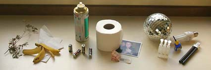

Papel
O papel reciclável inclui jornais, revistas, caixas de papelão, folhas de papel usadas, entre outros. É importante remover clipes, grampos e outros materiais não recicláveis antes da reciclagem.
O papel reciclável inclui jornais, revistas, caixas de papelão, folhas de papel usadas, entre outros. É importante remover clipes, grampos e outros materiais não recicláveis antes da reciclagem.
Plásticos recicláveis incluem garrafas PET, embalagens de produtos, sacolas plásticas e outros itens marcados com códigos de reciclagem específicos. Lave e seque os plásticos antes de reciclá-los.
O vidro reciclável inclui garrafas, potes e outros recipientes de vidro. Separe o vidro por cor (transparente, verde, âmbar) para facilitar a reciclagem.
Os metais recicláveis incluem latas de alumínio, latas de aço, embalagens metálicas e objetos metálicos diversos. Remova etiquetas e tampas antes de reciclá-los.
Resíduos orgânicos incluem restos de alimentos, cascas de frutas e legumes, borra de café, entre outros. Esses resíduos podem ser compostados para se transformarem em adubo.

Resíduos não recicláveis incluem papéis sujos, esponjas, cerâmicas, adesivos, entre outros. Esses itens devem ser descartados no lixo comum.
